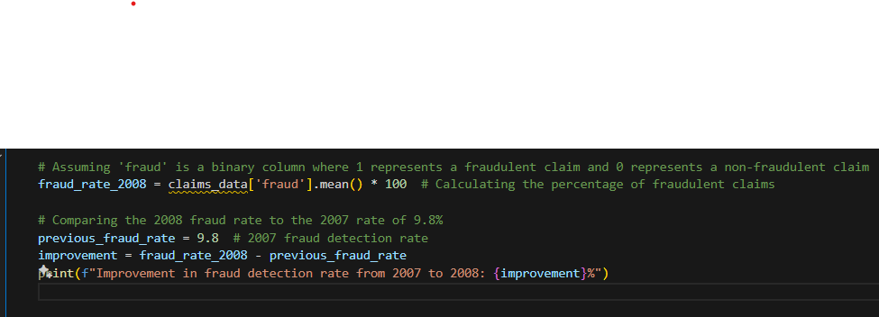
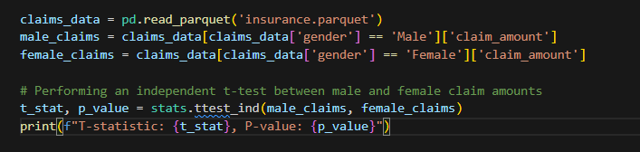
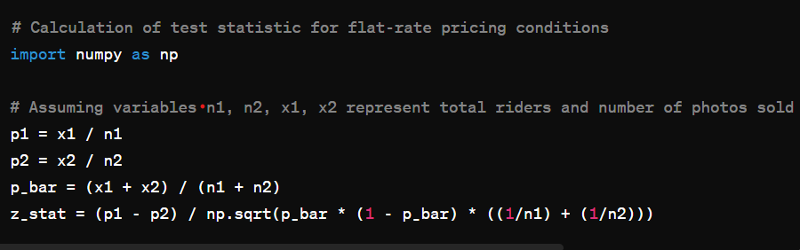
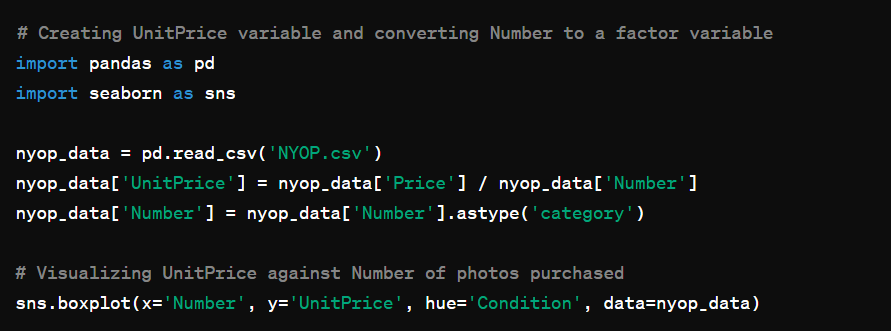
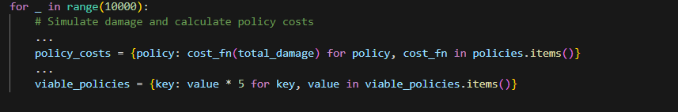
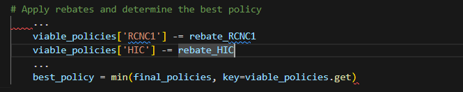
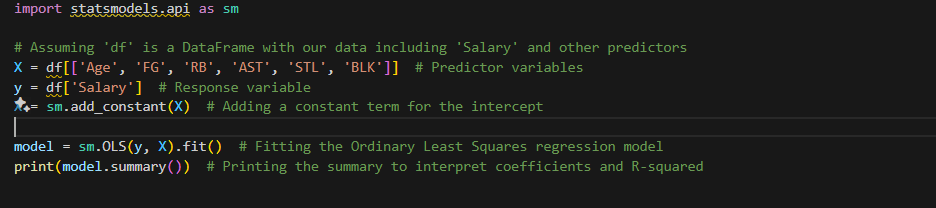
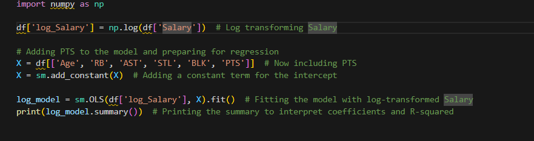
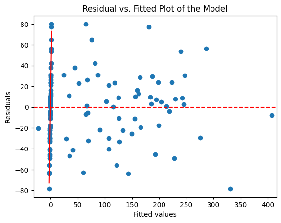
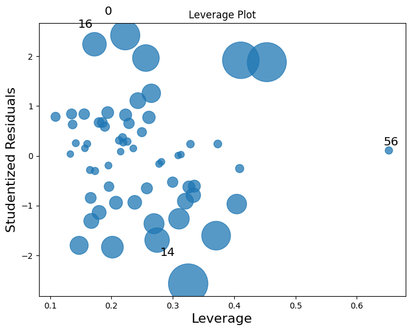

Business Analytics Case Studies
-
Deciphering Innovation's Path: A Strategic Analysis of Entrepreneurial Decisions and Investment Dilemmas
Faced with the question of how to navigate the challenging waters of innovation, entrepreneurship, and investment, I delved into the predicament of Client. Client, an inventive mind with a promising product idea, was caught in a whirlwind of decision-making that spanned technical feasibility, market reception, financial risk, and the contemplation of an angel investor's offer. The crux of Client's dilemma lay in weighing the 50% chance of technical success against the optimism of an 80% market favorability, all while considering whether to undertake market research and accept a conditional loan from an angel investor. To address this multifaceted situation, I turned to decision trees and Expected Monetary Value (EMV) analysis as my guiding tools. These methods allowed me to break down Client's situation into quantifiable outcomes and probabilities, providing a structured way to evaluate the potential financial implications of each path. My solution involved a strategic recommendation to proceed without the angel investor and to forgo the additional market research. This decision was rooted in the calculated EMV, which revealed that maintaining full control over the project and avoiding the high costs associated with the investor's loan terms and the market research fee would lead to a higher expected financial return. In synthesizing my advice for Client, I emphasized the importance of flexibility and adaptability. While the quantitative analysis provided a clear direction based on financial metrics, I acknowledged the critical role of qualitative factors and the unpredictable nature of the market and technological development. Thus, I advised Client to stay open to revisiting his decisions as new information became available, underscoring the entrepreneurial journey's dynamic and uncertain nature. My approach offered Client a blend of strategic foresight and practical advice, aiming to navigate the complexities of innovation with a calculated and informed mindset.
Strategic Insights for Financial Stability: Evaluating Claims, Demographics, and Fraud Detection in Insurance Operations
I've been contracted by an Insurance company to help them navigate through a challenging period marked by underperforming investments and rising concerns over fraudulent claims. My task involves analyzing a sample of 4,415 claims from the past year to inform several critical decisions. The primary question I'm addressing encapsulates evaluating the need for a premium increase based on changes in average claim amounts, investigating whether premiums should be adjusted for different demographic groups due to variations in claim behavior, and assessing the effectiveness of the company's recent investments in fraud detection technologies. My analysis will utilize statistical tests to examine differences in claim amounts by gender and retirement status, and to compare fraud detection rates and claim amounts between fraudulent and non-fraudulent claims. This thorough examination is essential for guiding Insurance company in making informed decisions about premium adjustments, considering demographic-based pricing strategies, and determining the future direction of their fraud detection efforts, all aimed at enhancing the company's operational efficiency and financial health.
Strategic Insights for Financial Stability: Evaluating Claims, Demographics, and Fraud Detection in Insurance Operations
I've been contracted by an Insurance company to help them navigate through a challenging period marked by underperforming investments and rising concerns over fraudulent claims. My task involves analyzing a sample of 4,415 claims from the past year to inform several critical decisions. The primary question I'm addressing encapsulates evaluating the need for a premium increase based on changes in average claim amounts, investigating whether premiums should be adjusted for different demographic groups due to variations in claim behavior, and assessing the effectiveness of the company's recent investments in fraud detection technologies. My analysis will utilize statistical tests to examine differences in claim amounts by gender and retirement status, and to compare fraud detection rates and claim amounts between fraudulent and non-fraudulent claims. This thorough examination is essential for guiding Insurance company in making informed decisions about premium adjustments, considering demographic-based pricing strategies, and determining the future direction of their fraud detection efforts, all aimed at enhancing the company's operational efficiency and financial health.
 Balancing Profit and Purpose: Analyzing Pricing Strategies and Charitable Impact in Amusement Park Sales
In this analysis, I was tasked with exploring the effectiveness of different pricing strategies at an amusement park, specifically focusing on flat-rate versus Name Your Own Price (NYOP) options, both with and without a charitable component. The experiment aimed to determine how these pricing strategies affected the number of photographs sold, total riders, and merchandise revenues, with a particular interest in whether incorporating a charity donation would influence consumer purchasing behavior. To do this, I delved into two datasets: "Sales.csv," providing an overview of sales and ridership across all pricing conditions, and "NYOP.csv," offering detailed insights into consumer choices under the NYOP conditions. My primary objectives were to compare the proportion of purchases between conditions, analyze average unit prices, and evaluate the impact on both the theme park's profits and societal benefits. For the flat-rate pricing analysis, I manually calculated the difference in the proportion of purchases between the FR and FR Charity conditions without relying on built-in t-test functions. I formulated null and alternative hypotheses to assess if the charitable aspect influenced the purchasing proportion, computed the test statistic for population proportion differences, and determined the significance and p-value to interpret the results. Through these analyses, I aimed to provide the amusement park with insights into how different pricing strategies could be optimized for revenue, the potential for societal benefit through charitable donations, and the overall impact on consumer behavior. This comprehensive approach allowed me to recommend strategies that balance profit maximization with social responsibility.
 Sky-High Decisions: Simulating the Financial Efficacy of Airline Insurance Policies
I conducted a comprehensive simulation to evaluate the cost-effectiveness of different insurance policies for an airline fleet over a five-year period. The fleet consisted of various aircraft types, each with specific costs and operational parameters. I aimed to assess the financial impact of potential damages and the performance of four distinct insurance policies—RCNC1, RCNC2, CTC, and HIC—under varying conditions of aircraft losses. This involved calculating the total fleet value, simulating annual damage incidents based on a given probability of damage, and applying the terms of each insurance policy to determine the total cost incurred due to damages and insurance premiums. The policies differed in their structure, from flat annual premiums to combinations of fixed and variable premiums, and included specific conditions like deductibles and coverage limits. To determine the most cost-effective policy, I simulated thousands of scenarios to account for random incidents of damage and incidental costs, adjusting the insurance cost calculations based on actual damages incurred and incorporating potential rebates for profits under specific policies. The script meticulously filters out policies that would lead to unsustainable costs, taking into account a safety margin to ensure financial viability. By aggregating the results of the simulations and applying rebates where applicable, I derived a clear comparison across policies based on their total costs over the simulated period. The final step involved identifying the policy that, on average, offers the lowest cost, thereby providing a data-driven recommendation for the airline to select the insurance policy that best mitigates financial risk while ensuring coverage for potential losses.
 Beyond the Arc: Analyzing the Impact of Performance Metrics on NBA Salaries and the Reality of the Hot Hand Phenomenon
In my investigation into the phenomenon of consistent performance streaks in basketball, I engaged with NBA player salary and performance data from the 2012/2013 season to construct a linear model that associates various performance metrics with player salaries. This inquiry began with visualizing data distributions and generating scatterplots to discern the connections between salary and performance indicators like age, field goals, rebounds, assists, steals, blocks, and points. The preliminary regression analysis, intentionally excluding points scored (PTS) to emphasize other metrics, was instrumental in pinpointing significant predictors of salary. This phase involved the interpretation of the coefficients to comprehend their impact on salary, banking on the statistical significance of each predictor. To remedy the data's skewness, I executed a logarithmic transformation on the salary variable, thereby enhancing the model's interpretability through a shift to log-scale analysis. Incorporating PTS in later models (Regression C and D) illuminated its significant role in influencing salary, leading to model adjustments for a more refined grasp of performance metrics' impact. Transforming salary and introducing standardized coefficients facilitated a subtle comparison among predictors, shedding light on the relative importance of different performance metrics in determining player salaries. This stage highlighted the complexity of linking salary levels to specific achievements on the court, underlining the intricate process of player valuation in the NBA. Exploring the theory of performance consistency, I adopted both a conditional probability method and a streak analysis to statistically evaluate the existence of consistent performance streaks. Through an examination of shooting data, I delved into the probabilities of successful shots following prior successes or failures, as well as sequences of hits and misses, to assess streakiness. This thorough statistical scrutiny aimed to affirm the theory of consistent performance streaks by juxtaposing observed shooting patterns with anticipated outcomes derived from players' overall shooting probabilities. Throughout this endeavor, my analysis endeavored not only to dissect the statistical underpinnings of the consistent performance streak phenomenon but also to offer a holistic perspective on how performance metrics affect NBA players' salaries, marrying rigorous data analysis with the captivating psychological dimension of perceived streakiness in sports performance.
 Refining Insights Through Data: A Comprehensive Analysis of the DeliBite Case
In addressing the DeliBite case, I first conducted exploratory data analysis by visualizing histograms and scatterplots to identify any anomalies. Recognizing skewed correlations between certain variables, I implemented a normalization technique to mitigate these issues. This involved creating new variables by dividing specific metrics by the total. This transformation ensured a more balanced representation of the data and facilitated a clearer understanding of the relationships between variables. Following the transformation, I compared correlations and regressions using both the original and transformed data. While both approaches were explored, I found the transformed data to be more preferable due to its improved interpretability and reduced multicollinearity. Leveraging Radiant's VIF feature, I assessed multicollinearity and examined standardized coefficients to determine the significance of predictors. Additionally, I utilized linear regression validation checks, such as dashboard plots, to validate the robustness of the model. In the subsequent stages, I focused on specific subsets of the data to tailor the analysis. For instance, in Part (b), I narrowed down the dataset to include only stores opened prior to a certain year. After constructing regression models using these subsets, I used the Predict tab in Radiant to make predictions based on the model's insights. Finally, in Part (c), I continued to leverage Radiant's features to conduct comprehensive analyses, ensuring thorough examination and interpretation of the DeliBite case.
 